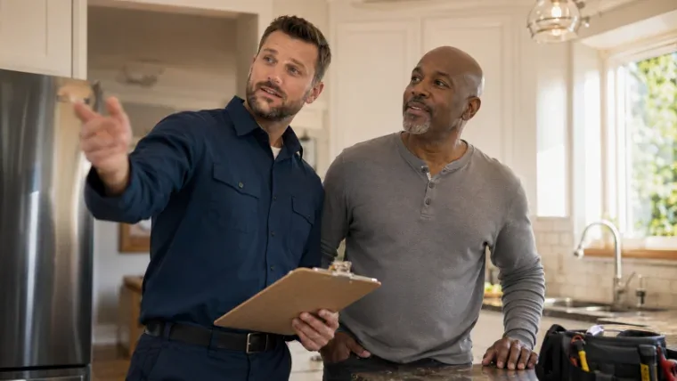
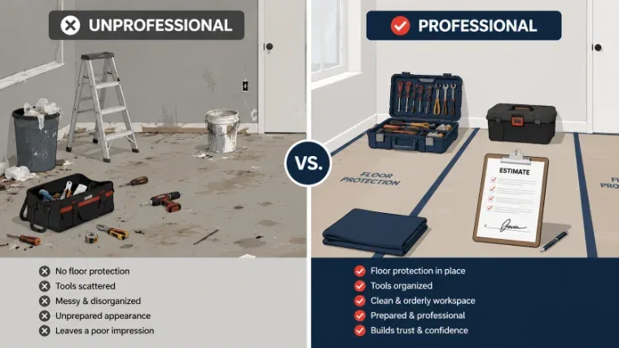

Every home-service business runs on the same math: it costs far more to win a new customer than to keep one you already have. Yet most trade businesses are built entirely around the one-time job — quote it, do it, invoice it, move on. The businesses that grow fastest flip that script. They treat every job as the first chapter of a relationship, not the whole story. Here's how to build repeat clients on purpose instead of by accident.
Why Repeat Clients Are the Real Growth Engine
A repeat client doesn't just book you again — they stop shopping around entirely, they refer their neighbors, and they forgive an occasional scheduling hiccup because trust is already built. Winning that kind of loyalty isn't about a punch card or a discount code. It's about what happens in the four hours you're actually in someone's home or on their property.
Treating Customers Right Starts Before You Touch a Tool
Treating customers well is a habit that starts at the first phone call, not the moment you pull into the driveway. Confirm the appointment. Give a realistic arrival window and text when you're on the way. Walk the job with the homeowner before you start so nothing is a surprise later. None of this costs money — it costs discipline — and it's the difference between a customer who feels handled and one who feels like a number.
Small habits that build big trust
- Call or text to confirm the day before, and again when you're 30 minutes out
- Explain what you're doing and why, in plain language, before you start
- Leave the space cleaner than you found it — every single time
- Follow up within a week to confirm everything is still working right

Professionalism on the Job Is What Gets You Rebooked
Professionalism on the job isn't a uniform and a clean truck, though both help. It's showing up when you said you would, quoting a price and holding it, and treating the customer's property like it's your own. Homeowners can't judge your technical skill — most can't tell a properly torqued fitting from a bad one — but they can absolutely judge whether you were on time, respectful, and honest. That's the scorecard they use when deciding whether to call you again.
The professionalism checklist that actually moves the needle
- Arrive in the window you promised, or communicate proactively if you can't
- Protect floors, lawns, and fixtures before work begins — every job, not just the big ones
- Give a written estimate before starting anything beyond the original scope
- Never talk down a previous contractor's work, even when it's tempting

Dealing With Difficult Customers Without Losing Them
Dealing with difficult customers is where most repeat business is quietly lost. A customer who's upset about a price, a delay, or a misunderstanding isn't usually trying to be hard to work with — they're trying to be heard. The businesses that keep these customers long-term do one thing consistently: they slow down, listen first, and fix the actual problem before defending themselves. Getting defensive first, even when you're right, almost always ends the relationship.
A simple framework for tense conversations
- Let them finish the complaint completely before responding
- Repeat back what you heard so they know you understood it
- Offer a concrete fix or next step, not just an apology
- Follow up after the fix to confirm they're satisfied — this is the step most businesses skip
Turn the Last Five Minutes Into the Next Job
The final five minutes of any job are the highest-leverage moment you have for building repeat clients, and most businesses waste them by simply packing up and leaving. Walk the customer through what you did. Mention anything worth keeping an eye on. Tell them plainly that you'd like to be their go-to for this kind of work going forward, and make it easy — a card, a text with your number saved, a note about seasonal maintenance. Repeat business rarely happens by accident. It happens because someone asked for it, clearly, at the moment trust was highest.